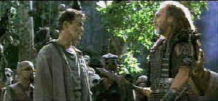

HBO/1994/118m/ANA,WS 2.35
The best thing about No Escape is Stuart Wilson. He plays Walter Marek, the leader of The Outsiders. Wilson has a good time hamming it up, throwing one-liners better than spears and showing his teeth in a variety of situations. But he’s just one of the villains. This is Ray Liotta’s show. Liotta is Robbins, a former Special Forces captain who can break out of most any prison and who has been thrown on this island of living hell, Absolom, because he couldn’t be a model prisoner. Hell? Absolom doesn’t seem so bad. The prison looked a lot worse. There’s even enough freedom so that a civil minority of the prisoners has established a nice little farming community. But Marek and The Outsiders are determined to break into The Insider community and destroy it. I am not sure why they want to, but hey it’s something to do on a Saturday night. The main questions here are: Will Dad, The Insider leader save the community? Will Robbins join the fight? Will Marek ever stop smiling? Whatever will become of the warden?
 |
Love at first sight. Robbins meets Marek©HBO |
Liotta provides a
one-note performance, overuses the Liotta stare, and generally proves that No Escape
won’t provide the leaping off point for an action movie career. Lance Henriksen gets
to make some sanctimonious speeches as The Father, leader of The Insiders and Kevin Dillon
plays a young prisoner who wants to be Robbins’ friend. Ironically, it’s
filmed very well by director Martin Campbell. The photography is slick. The music packs
punch. And it all moves pretty quickly, thank God. Maybe the producers hoped they could
develop a No Escape Theme Park. Just dump park visitors onto an island and let them fight
it out for food. Does it sound familiar?
Much of the time No Escape looks very good. But there’s a
major problem with edge enhancement. Horizontal lines break up and hop around with
irritating regularity. The jittery opening credits are indicative of the problem. Long
shots of the camp turn onto a mass of slithering lines. No Escape is a very dark move. The
contrast is strong. Night scenes have plenty of snap. The Dolby Digital 5:1 surround
provides lots of added excitement to the fighting.
 ã1998
Stuart J. Kobak , all rights reserved.
ã1998
Stuart J. Kobak , all rights reserved.